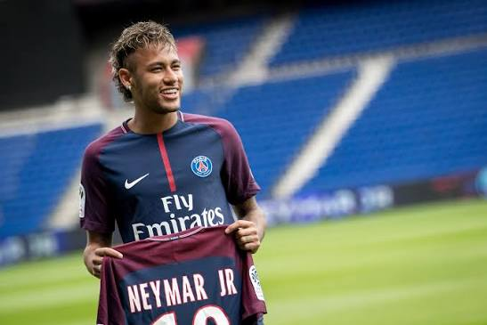
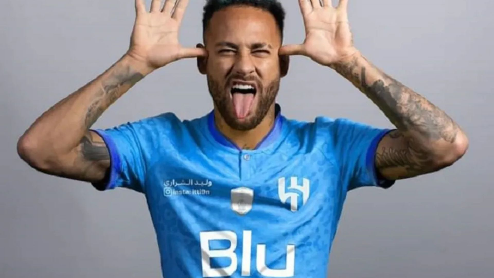

Santos FC
2009 - 2013
Clube onde Neymar começou sua carreira profissional e ganhou destaque no futebol brasileiro.

FC Barcelona
2013 - 2017
No Barcelona, Neymar conquistou importantes títulos e formou o famoso trio MSN.

Paris Saint-Germain
2017 - 2023
Neymar atuou durante seis temporadas no clube francês, conquistando diversos títulos nacionais.

Al-Hilal
2023 - 2025
Neymar chegou ao futebol saudita em 2023 para defender o Al-Hilal.